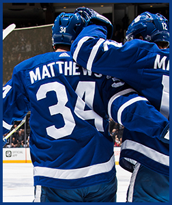
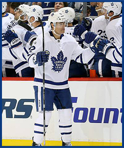
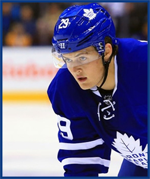
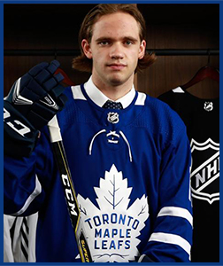

On a night where the Leafs were outshot 48-29, Frederik Andersen keeps the Leafs in the game, and eventually winning in a shootout, 2-1 against the Calgary Flames.

The Maple Leafs are entering the middle-third of their season - and staring down a particularly grueling December stretch that will have them playing 12 games in the next 25 days - so decompressing is important. Not easy, mind you, but important.

The Toronto Maple Leafs have a chance to become the best team in the NHL with a victory on Saturday night.The Leafs play the Canucks at Rogers Arena in Vancouver at 7 p.m. ET.Toronto is currently second place in the NHL’s Eastern Conference with 35 points behind the first place Tampa Lightning, who have 36 points.

Watching the Toronto Maple Leafs from a continent away, the former NHLer saw signs that William was about to emerge from the desert. “You’ll get out of it,” he urged his boy, who was dropped to the fourth line and saw a career-low in ice time during Tuesday’s game in Calgary.

Timothy Liljegren might not be the Leafs’ top prospect, or even the top defenceman on the Swedish roster in Buffalo starting Boxing Day, but Lou Lamoriello likes what he’s seen so far, on and off the ice.Now Liljegren, one of the team’s top defence prospects.